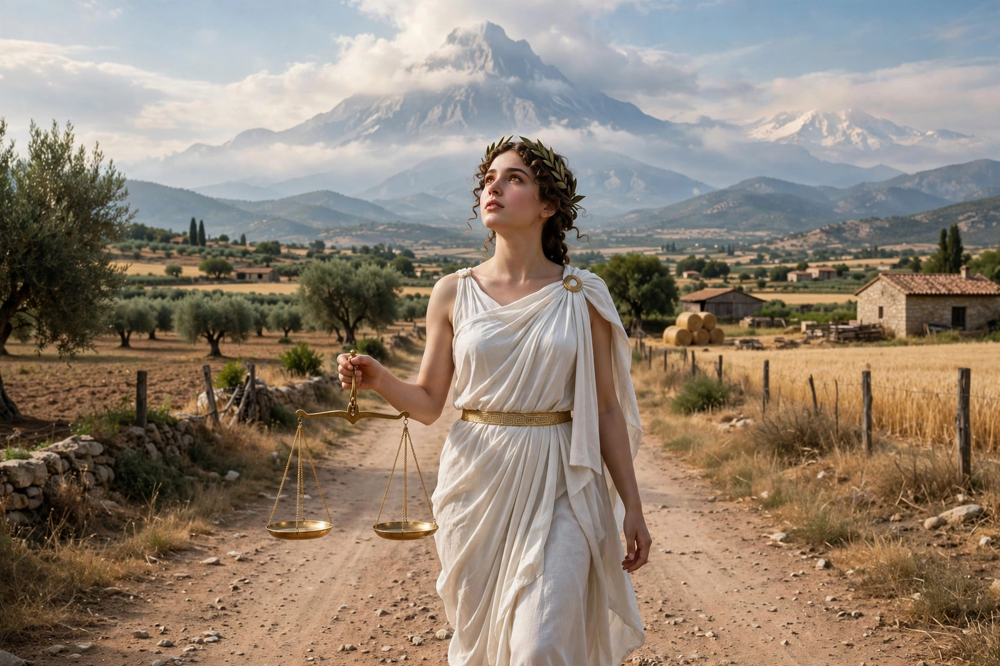

From Wikipedia, the free encyclopedia
| Dike | |
|---|---|
| Affiliation | Greek mythology; goddess of justice and moral order |
| Parents | Zeus and Themis |
| Sisters | Eunomia (Good Order) and Eirene (Peace) — the Horae |
| Role | Watches human deeds and reports injustice to Zeus; maiden of the Golden Age's end |

Dike (Greek: Δίκη) is the Greek goddess of justice — not of law's letter but of its moral substance: fair dealing, right judgement, and the order by which human communities hold together. Daughter of Zeus and Themis, and one of the Horae with her sisters Eunomia (Good Order) and Eirene (Peace), she walks the earth watching human deeds, sits beside Zeus's throne, and reports the crooked judgements of men — the bribe-eating kings of Hesiod's warning — so that punishment may follow. In Hesiod's Works and Days she is a maiden, dishonoured when men drag her by force, weeping and following them into their cities wrapped in mist, bringing evil to those who expelled her.
The myth of the ages gives Dike the most poignant exit in Greek religion: in the Golden Age she lived among mortals (as Astraea, the star-maiden), but as the races declined into bronze violence she withdrew — first to the hills, then to the sky, becoming the constellation Virgo, with her scales as Libra beside her. The story, told by Aratus and the Latin poets, made her the emblem of justice exiled by human wickedness and longed for ever since: every age's complaint that justice has left the earth quotes her departure.
Greek mythology · Themis · Zeus · Nemesis · Maat